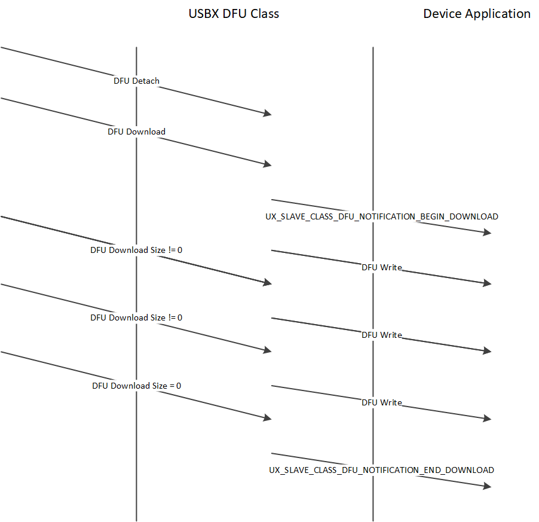
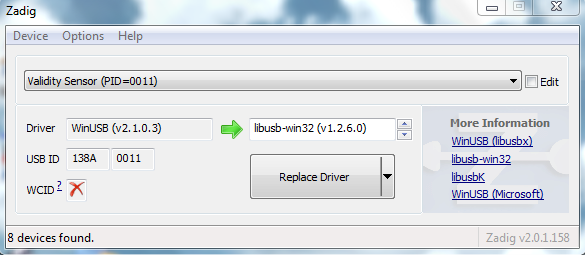
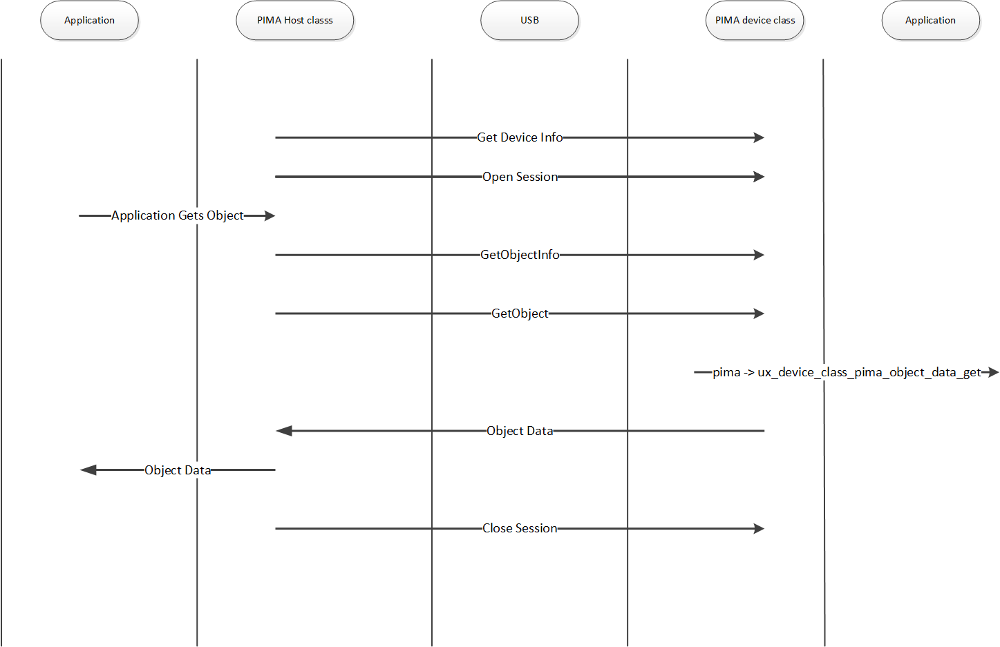

Chapter 2 - USBX Device Class Considerations
USB Device RNDIS Class
The USB device RNDIS class allows for a USB host system to communicate with the device as a ethernet device. This class is based on the Microsoft implementation and is specific to Windows platforms.
A RNDIS compliant device framework needs to be declared by the device stack. An example is found below.
unsigned char device_framework_full_speed[] = {
/* VID: 0x04b4
PID: 0x1127
*/
/* Device Descriptor */
0x12, /* bLength */
0x01, /* bDescriptorType */
0x10, 0x01, /* bcdUSB */
0x02, /* bDeviceClass - CDC */
0x00, /* bDeviceSubClass */
0x00, /* bDeviceProtocol */
0x40, /* bMaxPacketSize0 */
0xb4, 0x04, /* idVendor */
0x27, 0x11, /* idProduct */
0x00, 0x01, /* bcdDevice */
0x01, /* iManufacturer */
0x02, /* iProduct */
0x03, /* iSerialNumber */
0x01, /* bNumConfigurations */
/* Configuration Descriptor */
0x09, /* bLength */
0x02, /* bDescriptorType */
0x38, 0x00, /* wTotalLength */
0x02, /* bNumInterfaces */
0x01, /* bConfigurationValue */
0x00, /* iConfiguration */
0x40, /* bmAttributes - Self-powered */
0x00, /* bMaxPower */
/* Interface Association Descriptor */
0x08, /* bLength */
0x0b, /* bDescriptorType */
0x00, /* bFirstInterface */
0x02, /* bInterfaceCount */
0x02, /* bFunctionClass - CDC - Communication */
0xff, /* bFunctionSubClass - Vendor Defined – In this case, RNDIS */
0x00, /* bFunctionProtocol - No class specific protocol required */
0x00, /* iFunction */
/* Interface Descriptor */
0x09, /* bLength */
0x04, /* bDescriptorType */
0x00, /* bInterfaceNumber */
0x00, /* bAlternateSetting */
0x01, /* bNumEndpoints */
0x02, /* bInterfaceClass - CDC - Communication */
0xff, /* bInterfaceSubClass - Vendor Defined – In this case, RNDIS */
0x00, /* bInterfaceProtocol - No class specific protocol required */
0x00, /* iInterface */
/* Endpoint Descriptor */
0x07, /* bLength */
0x05, /* bDescriptorType */
0x83, /* bEndpointAddress */
0x03, /* bmAttributes - Interrupt */
0x08, 0x00, /* wMaxPacketSize */
0xff, /* bInterval */
/* Interface Descriptor */
0x09, /* bLength */
0x04, /* bDescriptorType */
0x01, /* bInterfaceNumber */
0x00, /* bAlternateSetting */
0x02, /* bNumEndpoints */
0x0a, /* bInterfaceClass - CDC - Data */
0x00, /* bInterfaceSubClass - Should be 0x00 */
0x00, /* bInterfaceProtocol - No class specific protocol required */
0x00, /* iInterface */
/* Endpoint Descriptor */
0x07, /* bLength */
0x05, /* bDescriptorType */
0x02, /* bEndpointAddress */
0x02, /* bmAttributes - Bulk */
0x40, 0x00, /* wMaxPacketSize */
0x00, /* bInterval */
/* Endpoint Descriptor */
0x07, /* bLength */
0x05, /* bDescriptorType */
0x81, /* bEndpointAddress */
0x02, /* bmAttributes - Bulk */
0x40, 0x00, /* wMaxPacketSize */
0x00, /* bInterval */
};The RNDIS class uses a very similar device descriptor approach to the CDC-ACM and CDC-ECM and also requires a IAD descriptor. See the CDC-ACM class for definition and requirements for the device descriptor.
The activation of the RNDIS class is as follows.
/* Set the parameters for callback when insertion/extraction of a CDC device. Set to NULL.*/
parameter.ux_slave_class_rndis_instance_activate = UX_NULL;
parameter.ux_slave_class_rndis_instance_deactivate = UX_NULL;
/* Define a local NODE ID. */
parameter.ux_slave_class_rndis_parameter_local_node_id[0] = 0x00;
parameter.ux_slave_class_rndis_parameter_local_node_id[1] = 0x1e;
parameter.ux_slave_class_rndis_parameter_local_node_id[2] = 0x58;
parameter.ux_slave_class_rndis_parameter_local_node_id[3] = 0x41;
parameter.ux_slave_class_rndis_parameter_local_node_id[4] = 0xb8;
parameter.ux_slave_class_rndis_parameter_local_node_id[5] = 0x78;
/* Define a remote NODE ID. */
parameter.ux_slave_class_rndis_parameter_remote_node_id[0] = 0x00;
parameter.ux_slave_class_rndis_parameter_remote_node_id[1] = 0x1e;
parameter.ux_slave_class_rndis_parameter_remote_node_id[2] = 0x58;
parameter.ux_slave_class_rndis_parameter_remote_node_id[3] = 0x41;
parameter.ux_slave_class_rndis_parameter_remote_node_id[4] = 0xb8;
parameter.ux_slave_class_rndis_parameter_remote_node_id[5] = 0x79;
/* Set extra parameters used by the RNDIS query command with certain OIDs. */
parameter.ux_slave_class_rndis_parameter_vendor_id = 0x04b4 ;
parameter.ux_slave_class_rndis_parameter_driver_version = 0x1127;
ux_utility_memory_copy(parameter.ux_slave_class_rndis_parameter_vendor_description,
"ELOGIC RNDIS", 12);
/* Initialize the device rndis class. This class owns both interfaces. */
status = ux_device_stack_class_register(_ux_system_slave_class_rndis_name,
ux_device_class_rndis_entry, 1,0, ¶meter);As for the CDC-ECM, the RNDIS class requires 2 nodes, one local and one remote but there is no requirement to have a string descriptor describing the remote node.
However due to the Microsoft messaging mechanism, some extra parameters are required. First the vendor ID has to be passed. Likewise, the driver version of the RNDIS. A vendor string must also be given.
The RNDIS class has built-in APIs for transferring data both ways but they are hidden to the application as the user application will communicate with the USB Ethernet device through NetX Duo.
The USBX RNDIS class is closely tied to the NetX Duo Network stack. An application using both NetX Duo and USBX RNDIS class will activate the NetX Duo network stack in its usual way but in addition needs to activate the USB network stack as follows.
/* Initialize the NetX Duo system. */
nx_system_initialize();
/* Perform the initialization of the network driver. This will initialize the USBX network layer.*/
ux_network_driver_init();The USB network stack needs to be activated only once and is not specific to RNDIS but is required by any USB class that requires NetX services.
The RNDIS class will not be recognized by MAC OS and Linux hosts as it is specific to Microsoft operating systems. On Windows platforms a .inf file needs to be present on the host that matches the device descriptor. Microsoft supplies a template for the RNDIS class and it can be found in the usbx_windows_host_files directory. For more recent version of Windows the file RNDIS_Template.inf should be used. This file needs to be modified to reflect the PID/VID used by the device. The PID/VID will be specific to the final customer when the company and the product are registered with the USB-IF. In the inf file, the fields to modify are located here.
[DeviceList]
%DeviceName%=DriverInstall, USB\\VID_xxxx&PID_yyyy&MI_00
[DeviceList.NTamd64]
%DeviceName%=DriverInstall, USB\\VID_xxxx&PID_yyyy&MI_00In the device framework of the RNDIS device, the PID/VID are stored in the device descriptor (see the device descriptor declared above)
When a USB host systems discovers the USB RNDIS device, it will mount a network interface and the device can be used with network protocol stack. See the host Operating System for reference.
USB Device DFU Class
The USB device DFU class allows for a USB host system to update the device firmware based on a host application. The DFU class is a USB-IF standard class.
USBX DFU class is relatively simple. It device descriptor does not require anything but a control endpoint. Most of the time, this class will be embedded into a USB composite device. The device can be anything such as a storage device or a comm device and the added DFU interface can inform the host that the device can have its firmware updated on the fly.
The DFU class works in 3 steps. First the device mounts as normal using the class exported. An application on the host (Windows or Linux) will exercise the DFU class and send a request to reset the device into DFU mode. The device will disappear from the bus for a short time (enough for the host and the device to detect a RESET sequence) and upon restarting, the device will be exclusively in DFU mode, waiting for the host application to send a firmware upgrade. When the firmware upgrade has been completed, the host application resets the device and upon re-enumeration the device will revert to its normal operation with the new firmware.
A DFU device framework will look like this.
UCHAR device_framework_full_speed[] = {
/* Device descriptor */
0x12, 0x01, 0x10, 0x01, 0x00, 0x00, 0x00, 0x40,
0x99, 0x99, 0x00, 0x00, 0x00, 0x00, 0x01, 0x02,
0x03, 0x01,
/* Configuration descriptor */
0x09, 0x02, 0x1b, 0x00, 0x01, 0x01, 0x00, 0xc0,
0x32,
/* Interface descriptor for DFU. */
0x09, 0x04, 0x00, 0x00, 0x00, 0xFE, 0x01, 0x01, 0x00,
/* Functional descriptor for DFU. */
0x09, 0x21, 0x0f, 0xE8, 0x03, 0x40, 0x00, 0x00,
0x01,
};In this example, the DFU descriptor is not associated with any other classes. It has a simple interface descriptor and no other endpoints attached to it. There is a Functional descriptor that describes the specifics of the DFU capabilities of the device.
The description of the DFU capabilities are as follows.
| Name | Offset | Size | type | Description |
|---|---|---|---|---|
bmAttributes |
2 |
1 |
Bit field |
Bit 3: device will perform a bus detach-attach sequence when it receives a DFU_DETACH request. The host must not issue a USB Reset. (bitWillDetach) 0 = no 1 = yes Bit 2: device is able to communicate via USB after Manifestation phase. (bitManifestationTolerant) 0 = no, must see bus reset 1 = yes Bit 1: upload capable (bitCanUpload) 0 = no 1 = yes Bit 0: download capable (bitCanDnload) 0 = no 1 = yes |
wDetachTimeOut |
3 |
2 |
number |
Time, in milliseconds, that the device will wait after receipt of the DFU_DETACH request. If this time elapses without a USB reset, then the device will terminate the Reconfiguration phase and revert back to normal operation. This represents the maximum time that the device can wait (depending on its timers, etc.). USBX sets this value to 1000 ms. |
wTransferSize |
5 |
2 |
number |
Maximum number of bytes that the device can accept per control-write operation. USBX sets this value to 64 bytes. |
The declaration of the DFU class is as follows:
/* Store the DFU parameters. */
dfu_parameter.ux_slave_class_dfu_parameter_instance_activate =
tx_demo_thread_dfu_activate;
dfu_parameter.ux_slave_class_dfu_parameter_instance_deactivate =
tx_demo_thread_dfu_deactivate;
dfu_parameter.ux_slave_class_dfu_parameter_read =
tx_demo_thread_dfu_read;
dfu_parameter.ux_slave_class_dfu_parameter_write =
tx_demo_thread_dfu_write;
dfu_parameter.ux_slave_class_dfu_parameter_get_status =
tx_demo_thread_dfu_get_status;
dfu_parameter.ux_slave_class_dfu_parameter_notify =
tx_demo_thread_dfu_notify;
dfu_parameter.ux_slave_class_dfu_parameter_framework =
device_framework_dfu;
dfu_parameter.ux_slave_class_dfu_parameter_framework_length =
DEVICE_FRAMEWORK_LENGTH_DFU;
/* Initialize the device dfu class. The class is connected with interface
1 on configuration 1. */
status = ux_device_stack_class_register(_ux_system_slave_class_dfu_name,
ux_device_class_dfu_entry, 1, 0,
(VOID *)&dfu_parameter);
if (status!=UX_SUCCESS) return;The DFU class needs to work with a device firmware application specific to the target. Therefore it defines several call back to read and write blocks of firmware and to get status from the firmware update application. The DFU class also has a notify callback function to inform the application when a begin and end of transfer of the firmware occur.
Following is the description of a typical DFU application flow.

The major challenge of the DFU class is getting the right application on the host to perform the download the firmware. There is no application supplied by Microsoft or the USB-IF. Some shareware exist and they work reasonably well on Linux and to a lesser extent on Windows.
On Linux, one can use dfu-utils to be found here: https://wiki.openmoko.org/wiki/Dfu-util A lot of information on dfu utils can also be found on this link: https://github.com/libusb/libusb/wiki
The Linux implementation of DFU performs correctly the reset sequence between the host and the device and therefore the device does not need to do it. Linux can accept for the bmAttributes bitWillDetach to be 0. Windows on the other side requires the device to perform the reset.
On Windows, the USB registry must be able to associate the USB device with its PID/VID and the USB library which will in turn be used by the DFU application. This can be easily done with the free utility Zadig which can be found here: https://sourceforge.net/projects/libwdi/files/zadig/.
Running Zadig for the first time will show this screen:

From the device list, find your device and associate it with the libusb windows driver. This will bind the PID/VID of the device with the Windows USB library used by the DFU utilities.
To operate the DFU command, simply unpack the zipped dfu utilities into a directory, making sure the libusb dll is also present in the same directory. The DFU utilities must be run from a DOS box at the command line.
First, type the command dfu-util --l to determine whether the device is listed. If not, run Zadig to make sure the device is listed and associated with the USB library. You should see a screen as follows:
C:\usb specs\DFU\dfu-util-0.6>dfu-util -l dfu-util 0.6
Copyright 2005-2008 Weston Schmidt, Harald Welte and OpenMoko Inc.
Copyright 2010-2012 Tormod Volden and Stefan Schmidt
This program is Free Software and has ABSOLUTELY NO WARRANTY
Found Runtime: [0a5c:21bc] devnum=0, cfg=1, intf=3, alt=0, name="UNDEFINED"The next step will be to prepare the file to be downloaded. The USBX DFU class does not perform any verification on this file and is agnostic of its internal format. This firmware file is very specific to the target but not to DFU nor to USBX.
Then the dfu-util can be instructed to send the file by typing the following command:
dfu-util –R –t 64 -D file_to_download.hexThe dfu-util should display the file download process until the firmware has been completely downloaded.
USB Device PIMA Class (PTP Responder)
The USB device PIMA class allows for a USB host system (Initiator) to connect to a
PIMA device (Responder) to transfer media files. USBX Pima Class is conforming to the USB-IF PIMA 15740 class also known as PTP class (for Picture Transfer Protocol).
USBX device side PIMA class supports the following operations.
| Operation code | Value | Description |
|---|---|---|
UX_DEVICE_CLASS_PIMA_OC_GET_DEVICE_INFO |
0x1001 |
Obtain the device supported operations and events |
UX_DEVICE_CLASS_PIMA_OC_OPEN_SESSION |
0x1002 |
Open a session between the host and the device |
UX_DEVICE_CLASS_PIMA_OC_CLOSE_SESSION |
0x1003 |
Close a session between the host and the device |
UX_DEVICE_CLASS_PIMA_OC_GET_STORAGE_IDS |
0x1004 |
Returns the storage ID for the device. USBX PIMA uses one storage ID only |
UX_DEVICE_CLASS_PIMA_OC_GET_STORAGE_INFO |
0x1005 |
Return information about the storage object such as max capacity and free space |
UX_DEVICE_CLASS_PIMA_OC_GET_NUM_OBJECTS |
0x1006 |
Return the number of objects contained in the storage device |
UX_DEVICE_CLASS_PIMA_OC_GET_OBJECT_HANDLES |
0x1007 |
Return an array of handles of the objects on the storage device |
UX_DEVICE_CLASS_PIMA_OC_GET_OBJECT_INFO |
0x1008 |
Return information about an object such as the name of the object, its creation date, modification date |
UX_DEVICE_CLASS_PIMA_OC_GET_OBJECT |
0x1009 |
Return the data pertaining to a specific object |
UX_DEVICE_CLASS_PIMA_OC_GET_THUMB |
0x100A |
Send the thumbnail if available about an object |
UX_DEVICE_CLASS_PIMA_OC_DELETE_OBJECT |
0x100B |
Delete an object on the media |
UX_DEVICE_CLASS_PIMA_OC_SEND_OBJECT_INFO |
0x100C |
Send to the device information about an object for its creation on the media |
UX_DEVICE_CLASS_PIMA_OC_SEND_OBJECT |
0x100D |
Send data for an object to the device |
UX_DEVICE_CLASS_PIMA_OC_FORMAT_STORE |
0x100F |
Clean the device media |
UX_DEVICE_CLASS_PIMA_OC_RESET_DEVICE |
0x0110 |
Reset the target device |
| Operation Code | Value | Description |
|---|---|---|
UX_DEVICE_CLASS_PIMA_EC_CANCEL_TRANSACTION |
0x4001 |
Cancels the current transaction |
UX_DEVICE_CLASS_PIMA_EC_OBJECT_ADDED |
0x4002 |
An object has been added to the device media and can be retrieved by the host. |
UX_DEVICE_CLASS_PIMA_EC_OBJECT_REMOVED |
0x4003 |
An object has been deleted from the device media |
UX_DEVICE_CLASS_PIMA_EC_STORE_ADDED |
0x4004 |
A media has been added to the device |
UX_DEVICE_CLASS_PIMA_EC_STORE_REMOVED |
0x4005 |
A media has been deleted from the device |
UX_DEVICE_CLASS_PIMA_EC_DEVICE_PROP_CHANGED |
0x4006 |
Device properties have changed |
UX_DEVICE_CLASS_PIMA_EC_OBJECT_INFO_CHANGED |
0x4007 |
An object information has changed |
UX_DEVICE_CLASS_PIMA_EC_DEVICE_INFO_CHANGE |
0x4008 |
A device has changed |
UX_DEVICE_CLASS_PIMA_EC_REQUEST_OBJECT_TRANSFER |
0x4009 |
The device requests the transfer of an object from the host |
UX_DEVICE_CLASS_PIMA_EC_STORE_FULL |
0x400A |
Device reports the media is full |
UX_DEVICE_CLASS_PIMA_EC_DEVICE_RESET |
0x400B |
Device reports it was reset |
UX_DEVICE_CLASS_PIMA_EC_STORAGE_INFO_CHANGED |
0x400C |
Storage information has changed on the device |
UX_DEVICE_CLASS_PIMA_EC_CAPTURE_COMPLETE |
0x400D |
Capture is completed |
The USBX PIMA device class uses a TX Thread to listen to PIMA commands from the host.
A PIMA command is composed of a command block, a data block and a status phase.
The function ux_device_class_pima_thread posts a request to the stack to receive a PIMA command from the host side. The PIMA command is decoded and verified for content. If the command block is valid, it branches to the appropriate command handler.
Most PIMA commands can only be executed when a session has been opened by the host. The only exception is the command UX_DEVICE_CLASS_PIMA_OC_GET_DEVICE_INFO. With USBX PIMA implementation, only one session can be opened between an Initiator and Responder at any time. All transactions within the single session are blocking and no new transaction can begin before the previous one completed.
PIMA transactions are composed of 3 phases, a command phase, an optional data phase and a response phase. If a data phase is present, it can only be in one direction.
The Initiator always determines the flow of the PIMA operations but the Responder can initiate events back to the Initiator to inform status changes that happened during a session.
The following diagram shows the transfer of a data object between the host and the PIMA device class.

Initialization of the PIMA device class
The PIMA device class needs some parameters supplied by the application during the initialization.
The following parameters describe the device and storage information.
-
ux_device_class_pima_manufacturer -
ux_device_class_pima_model -
ux_device_class_pima_device_version -
ux_device_class_pima_serial_number -
ux_device_class_pima_storage_id -
ux_device_class_pima_storage_type -
ux_device_class_pima_storage_file_system_type -
ux_device_class_pima_storage_access_capability -
ux_device_class_pima_storage_max_capacity_low -
ux_device_class_pima_storage_max_capacity_high -
ux_device_class_pima_storage_free_space_low -
ux_device_class_pima_storage_free_space_high -
ux_device_class_pima_storage_free_space_image -
ux_device_class_pima_storage_description -
ux_device_class_pima_storage_volume_label
The PIMA class also requires the registration of callback into the application to inform the application of certain events or retrieve/store data from/to the local media. The callbacks are as follows.
-
ux_device_class_pima_object_number_get -
ux_device_class_pima_object_handles_get -
ux_device_class_pima_object_info_get -
ux_device_class_pima_object_data_get -
ux_device_class_pima_object_info_send -
ux_device_class_pima_object_data_send -
ux_device_class_pima_object_delete
The following example shows how to initialize the client side of PIMA. This example uses Pictbridge as a client for PIMA.
/* Initialize the first XML object valid in the pictbridge instance.
Initialize the handle, type and file name.
The storage handle and the object handle have a fixed value of 1 in our implementation. */
object_info = pictbridge -> ux_pictbridge_object_client;
object_info -> ux_device_class_pima_object_format = UX_DEVICE_CLASS_PIMA_OFC_SCRIPT;
object_info -> ux_device_class_pima_object_storage_id = 1;
object_info -> ux_device_class_pima_object_handle_id = 2;
ux_utility_string_to_unicode(_ux_pictbridge_ddiscovery_name,
object_info -> ux_device_class_pima_object_filename);
/* Initialize the head and tail of the notification round robin buffers.
At first, the head and tail are pointing to the beginning of the array.
*/
pictbridge -> ux_pictbridge_event_array_head =
pictbridge -> ux_pictbridge_event_array;
pictbridge -> ux_pictbridge_event_array_tail =
pictbridge -> ux_pictbridge_event_array;
pictbridge -> ux_pictbridge_event_array_end =
pictbridge -> ux_pictbridge_event_array +
UX_PICTBRIDGE_MAX_EVENT_NUMBER;
/* Initialize the pima device parameter. */
pictbridge -> ux_pictbridge_pima_parameter.ux_device_class_pima_parameter_manufacturer =
pictbridge -> ux_pictbridge_dpslocal.ux_pictbridge_devinfo_vendor_name;
pictbridge -> ux_pictbridge_pima_parameter.ux_device_class_pima_parameter_model =
pictbridge -> ux_pictbridge_dpslocal.ux_pictbridge_devinfo_product_name;
pictbridge -> ux_pictbridge_pima_parameter.ux_device_class_pima_parameter_serial_number =
pictbridge -> ux_pictbridge_dpslocal.ux_pictbridge_devinfo_serial_no;
pictbridge -> ux_pictbridge_pima_parameter.ux_device_class_pima_parameter_storage_id = 1;
pictbridge -> ux_pictbridge_pima_parameter.ux_device_class_pima_parameter_storage_type =
UX_DEVICE_CLASS_PIMA_STC_FIXED_RAM;
pictbridge -> ux_pictbridge_pima_parameter.ux_device_class_pima_parameter_storage_file_system_type =
UX_DEVICE_CLASS_PIMA_FSTC_GENERIC_FLAT;
pictbridge -> ux_pictbridge_pima_parameter.ux_device_class_pima_parameter_storage_access_capability =
UX_DEVICE_CLASS_PIMA_AC_READ_WRITE;
pictbridge -> ux_pictbridge_pima_parameter.ux_device_class_pima_parameter_storage_max_capacity_low =
pictbridge -> ux_pictbridge_dpslocal.ux_pictbridge_devinfo_storage_size;
pictbridge -> ux_pictbridge_pima_parameter.ux_device_class_pima_parameter_storage_max_capacity_high = 0;
pictbridge -> ux_pictbridge_pima_parameter.ux_device_class_pima_parameter_storage_free_space_low =
pictbridge -> ux_pictbridge_dpslocal.ux_pictbridge_devinfo_storage_size;
pictbridge -> ux_pictbridge_pima_parameter.ux_device_class_pima_parameter_storage_free_space_high = 0;
pictbridge -> ux_pictbridge_pima_parameter.ux_device_class_pima_parameter_storage_free_space_image = 0;
pictbridge -> ux_pictbridge_pima_parameter.ux_device_class_pima_parameter_storage_description =
_ux_pictbridge_volume_description;
pictbridge -> ux_pictbridge_pima_parameter.ux_device_class_pima_parameter_storage_volume_label =
_ux_pictbridge_volume_label;
pictbridge -> ux_pictbridge_pima_parameter.ux_device_class_pima_parameter_object_number_get =
ux_pictbridge_dpsclient_object_number_get;
pictbridge -> ux_pictbridge_pima_parameter.ux_device_class_pima_parameter_object_handles_get =
ux_pictbridge_dpsclient_object_handles_get;
pictbridge -> ux_pictbridge_pima_parameter.ux_device_class_pima_parameter_object_info_get =
ux_pictbridge_dpsclient_object_info_get;
pictbridge -> ux_pictbridge_pima_parameter.ux_device_class_pima_parameter_object_data_get =
ux_pictbridge_dpsclient_object_data_get;
pictbridge -> ux_pictbridge_pima_parameter.ux_device_class_pima_parameter_object_info_send =
ux_pictbridge_dpsclient_object_info_send;
pictbridge -> ux_pictbridge_pima_parameter.ux_device_class_pima_parameter_object_data_send =
ux_pictbridge_dpsclient_object_data_send;
pictbridge -> ux_pictbridge_pima_parameter.ux_device_class_pima_parameter_object_delete =
ux_pictbridge_dpsclient_object_delete;
/* Store the instance owner. */
pictbridge -> ux_pictbridge_pima_parameter.ux_device_class_pima_parameter_application =
(VOID *) pictbridge;
/* Initialize the device pima class. The class is connected with interface 0 */
status = ux_device_stack_class_register(_ux_system_slave_class_pima_name,
ux_device_class_pima_entry, 1, 0, (VOID *)&pictbridge -> ux_pictbridge_pima_parameter);
/* Check status. */
if (status != UX_SUCCESS)ux_device_class_pima_object_number_get
Getting the object number from the application
Prototype
UINT ux_device_class_pima_object_number_get(
UX_SLAVE_CLASS_PIMA *pima,
ULONG *object_number);Description
This function is called when the PIMA class needs to retrieve the number of objects in the local system and send it back to the host.
ux_device_class_pima_object_handles_get
Return the object handle array
Prototype
UINT **ux_device_class_pima_object_handles_get**(
UX_SLAVE_CLASS_PIMA_STRUCT *pima,
ULONG object_handles_format_code,
ULONG object_handles_association,
ULONG *object_handles_array,
ULONG object_handles_max_number);Description
This function is called when the PIMA class needs to retrieve the object handles array in the local system and send it back to the host.
Parameters
-
pima: Pointer to the pima class instance.
-
object_handles_format_code: Format code for the handles
-
object_handles_association: Object association code
-
object_handle_array: Address where to store the handles
-
object_handles_max_number: Maximum number of handles in the array
Example
UINT ux_pictbridge_dpsclient_object_handles_get(UX_SLAVE_CLASS_PIMA *pima,
ULONG object_handles_format_code,
ULONG object_handles_association,
ULONG *object_handles_array,
ULONG object_handles_max_number)
{
UX_PICTBRIDGE *pictbridge;
UX_SLAVE_CLASS_PIMA_OBJECT *object_info;
/* Get the pointer to the Pictbridge instance. */
pictbridge = (UX_PICTBRIDGE *) pima -> ux_device_class_pima_application;
/* Set the pima pointer to the pictbridge instance. */
pictbridge -> ux_pictbridge_pima = (VOID *) pima;
/* We say we have one object but the caller might specify different format code and associations. */
object_info = pictbridge -> ux_pictbridge_object_client;
/* Insert in the array the number of found handles so far: 0. */
ux_utility_long_put((UCHAR *)object_handles_array, 0);
/* Check the type demanded. */
if (object_handles_format_code == 0 || object_handles_format_code ==
0xFFFFFFFF || object_info -> ux_device_class_pima_object_format ==
object_handles_format_code)
{
/* Insert in the array the number of found handles. This handle is for the client XML script. */
ux_utility_long_put((UCHAR *)object_handles_array, 1);
/* Adjust the array to point after the number of elements. */
object_handles_array++;
/* We have a candidate. Store the handle. */
ux_utility_long_put((UCHAR *)object_handles_array, object_info ->
ux_device_class_pima_object_handle_id);
}
return(UX_SUCCESS);
}ux_device_class_pima_object_info_get
Return the object information
Prototype
UINT ux_device_class_pima_object_info_get(
struct UX_SLAVE_CLASS_PIMA_STRUCT *pima,
ULONG object_handle,
UX_SLAVE_CLASS_PIMA_OBJECT **object);Description
This function is called when the PIMA class needs to retrieve the object handles array in the local system and send it back to the host.
Parameters
-
pima: Pointer to the pima class instance.
-
object_handles: Handle of the object
-
object: Object pointer address
Example
UINT ux_pictbridge_dpsclient_object_info_get(UX_SLAVE_CLASS_PIMA *pima,
ULONG object_handle, UX_SLAVE_CLASS_PIMA_OBJECT **object)
{
UX_PICTBRIDGE *pictbridge;
UX_SLAVE_CLASS_PIMA_OBJECT *object_info;
/* Get the pointer to the Pictbridge instance. */
pictbridge = (UX_PICTBRIDGE *)pima -> ux_device_class_pima_application;
/* Check the object handle. If this is handle 1 or 2 , we need to return the XML script object.
If the handle is not 1 or 2, this is a JPEG picture or other object to be printed. */
if ((object_handle == UX_PICTBRIDGE_OBJECT_HANDLE_HOST_RESPONSE) ||
(object_handle == UX_PICTBRIDGE_OBJECT_HANDLE_CLIENT_REQUEST)) {
/* Check what XML object is requested. It is either a request script or a response. */
if (object_handle == UX_PICTBRIDGE_OBJECT_HANDLE_HOST_RESPONSE)
object_info = (UX_SLAVE_CLASS_PIMA_OBJECT *) pictbridge -> ux_pictbridge_object_host;
else
object_info = (UX_SLAVE_CLASS_PIMA_OBJECT *) pictbridge ->
ux_pictbridge_object_client;
} else
/* Get the object info from the job info structure. */
object_info = (UX_SLAVE_CLASS_PIMA_OBJECT *) pictbridge ->
ux_pictbridge_jobinfo.ux_pictbridge_jobinfo_object;
/* Return the pointer to this object. */
*object = object_info;
/* We are done. */
return(UX_SUCCESS);
}ux_device_class_pima_object_data_get
Return the object data
Prototype
UINT ux_device_class_pima_object_info_get(
UX_SLAVE_CLASS_PIMA *pima,
ULONG object_handle,
UCHAR *object_buffer,
ULONG object_offset,
ULONG object_length_requested,
ULONG *object_actual_length);Description
This function is called when the PIMA class needs to retrieve the object data in the local system and send it back to the host.
Parameters
-
pima: Pointer to the pima class instance.
-
object_handle: Handle of the object
-
object_buffer: Object buffer address
-
object_length_requested: Object data length requested by the client to the application
-
object_actual_length: Object data length returned by the application
Example
UINT ux_pictbridge_dpsclient_object_data_get(UX_SLAVE_CLASS_PIMA *pima,
ULONG object_handle, UCHAR *object_buffer, ULONG object_offset,
ULONG object_length_requested, ULONG *object_actual_length)
{
UX_PICTBRIDGE *pictbridge;
UX_SLAVE_CLASS_PIMA_OBJECT *object_info;
UCHAR *pima_object_buffer;
ULONG actual_length;
UINT status;
/* Get the pointer to the Pictbridge instance. */
pictbridge = (UX_PICTBRIDGE *)pima -> ux_device_class_pima_application;
/* Check the object handle. If this is handle 1 or 2 , we need to return the XML script object.
If the handle is not 1 or 2, this is a JPEG picture or other object to be printed. */
if ((object_handle == UX_PICTBRIDGE_OBJECT_HANDLE_HOST_RESPONSE) ||
(object_handle == UX_PICTBRIDGE_OBJECT_HANDLE_CLIENT_REQUEST))
{
/* Check what XML object is requested. It is either a request script or a response. */
if (object_handle == UX_PICTBRIDGE_OBJECT_HANDLE_HOST_RESPONSE)
object_info = (UX_SLAVE_CLASS_PIMA_OBJECT *) pictbridge ->
ux_pictbridge_object_host;
else
object_info = (UX_SLAVE_CLASS_PIMA_OBJECT *) pictbridge ->
ux_pictbridge_object_client;
/* Is this the correct handle ? */
if (object_info -> ux_device_class_pima_object_handle_id == object_handle)
{
/* Get the pointer to the object buffer. */
pima_object_buffer = object_info -> ux_device_class_pima_object_buffer;
/* Copy the demanded object data portion. */
ux_utility_memory_copy(object_buffer, pima_object_buffer +
object_offset, object_length_requested);
/* Update the length requested. for a demo, we do not do any checking. */
*object_actual_length = object_length_requested;
/* What cycle are we in ? */
if (pictbridge -> ux_pictbridge_host_client_state_machine &
UX_PICTBRIDGE_STATE_MACHINE_HOST_REQUEST)
{
/* Check if we are blocking for a client request. */
if (pictbridge -> ux_pictbridge_host_client_state_machine &
UX_PICTBRIDGE_STATE_MACHINE_CLIENT_REQUEST_PENDING)
/* Yes we are pending, send an event to release the pending request. */
ux_utility_event_flags_set(&pictbridge ->
ux_pictbridge_event_flags_group,
UX_PICTBRIDGE_EVENT_FLAG_STATE_MACHINE_READY, TX_OR);
/* Since we are in host request, this indicates we are done with the cycle. */
pictbridge -> ux_pictbridge_host_client_state_machine =
UX_PICTBRIDGE_STATE_MACHINE_IDLE;
}
/* We have copied the requested data. Return OK. */
return(UX_SUCCESS);
}
}
else
{
/* Get the object info from the job info structure. */
object_info = (UX_SLAVE_CLASS_PIMA_OBJECT *) pictbridge ->
ux_pictbridge_jobinfo.ux_pictbridge_jobinfo_object;
/* Obtain the data from the application jobinfo callback. */
status = pictbridge -> ux_pictbridge_jobinfo.
ux_pictbridge_jobinfo_object_data_read(pictbridge, object_buffer, object_offset,
object_length_requested, &actual_length);
/* Save the length returned. */
*object_actual_length = actual_length;
/* Return the application status. */
return(status);
}
/* Could not find the handle. */
return(UX_DEVICE_CLASS_PIMA_RC_INVALID_OBJECT_HANDLE);
}ux_device_class_pima_object_info_send
Host sends the object information
Prototype
UINT ux_device_class_pima_object_info_send(
UX_SLAVE_CLASS_PIMA *pima,
UX_SLAVE_CLASS_PIMA_OBJECT *object,
ULONG *object_handle);Description
This function is called when the PIMA class needs to receive the object information in the local system for future storage.
Parameters
-
pima: Pointer to the pima class instance
-
object: Pointer to the object
-
object_handle: Handle of the object
Example
UINT ux_pictbridge_dpsclient_object_info_send(UX_SLAVE_CLASS_PIMA *pima,
UX_SLAVE_CLASS_PIMA_OBJECT *object, ULONG *object_handle)
{
UX_PICTBRIDGE *pictbridge;
UX_SLAVE_CLASS_PIMA_OBJECT *object_info; UCHAR
string_discovery_name[UX_PICTBRIDGE_MAX_FILE_NAME_SIZE];
/* Get the pointer to the Pictbridge instance. */
pictbridge = (UX_PICTBRIDGE *)pima -> ux_device_class_pima_application;
/* We only have one object. */
object_info = (UX_SLAVE_CLASS_PIMA_OBJECT *) pictbridge ->
ux_pictbridge_object_host;
/* Copy the demanded object info set. */
ux_utility_memory_copy(object_info, object,
UX_SLAVE_CLASS_PIMA_OBJECT_DATA_LENGTH);
/* Store the object handle. In Pictbridge we only receive XML scripts so the handle is hardwired to 1. */
object_info -> ux_device_class_pima_object_handle_id = 1;
*object_handle = 1;
/* Check state machine. If we are in discovery pending mode, check file name of this object. */
if (pictbridge -> ux_pictbridge_discovery_state ==
UX_PICTBRIDGE_DPSCLIENT_DISCOVERY_PENDING)
{
/* We are in the discovery mode. Check for file name. It must match
HDISCVRY.DPS in Unicode mode. */
/* Check if this is a script. */
if (object_info -> ux_device_class_pima_object_format ==
UX_DEVICE_CLASS_PIMA_OFC_SCRIPT)
{
/* Yes this is a script. We need to search for the HDISCVRY.DPS file name. Get the file name in a ascii format. */
ux_utility_unicode_to_string(object_info ->
ux_device_class_pima_object_filename,
string_discovery_name);
/* Now, compare it to the HDISCVRY.DPS file name. Check length first. */
if (ux_utility_string_length_get(_ux_pictbridge_hdiscovery_name)
== ux_utility_string_length_get(string_discovery_name))
{
/* So far, the length of name of the files are the same. Compare names now. */
if(ux_utility_memory_compare(_ux_pictbridge_hdiscovery_name,
string_discovery_name,
ux_utility_string_length_get(string_discovery_name)) == UX_SUCCESS)
{
/* We are done with discovery of the printer. We can now send notifications when the camera wants to print an object. */
pictbridge -> ux_pictbridge_discovery_state =
UX_PICTBRIDGE_DPSCLIENT_DISCOVERY_COMPLETE;
/* Set an event flag if the application is listening. */
ux_utility_event_flags_set(&pictbridge ->
ux_pictbridge_event_flags_group,
UX_PICTBRIDGE_EVENT_FLAG_DISCOVERY, TX_OR);
/* There is no object during th discovery cycle. */
return(UX_SUCCESS);
}
}
}
}
/* What cycle are we in ? */
if (pictbridge -> ux_pictbridge_host_client_state_machine ==
UX_PICTBRIDGE_STATE_MACHINE_IDLE)
/* Since we are in idle state, we must have received a request from the host. */
pictbridge -> ux_pictbridge_host_client_state_machine =
UX_PICTBRIDGE_STATE_MACHINE_HOST_REQUEST;
/* We have copied the requested data. Return OK. */
return(UX_SUCCESS);
}ux_device_class_pima_object_data_send
Host sends the object data
Prototype
UINT ux_device_class_pima_object_data_send(
UX_SLAVE_CLASS_PIMA *pima,
ULONG object_handle,
ULONG phase,
UCHAR *object_buffer,
ULONG object_offset,
ULONG object_length);Description
This function is called when the PIMA class needs to receive the object data in the local system for storage.
Parameters
-
pima: Pointer to the pima class instance
-
object_handle: Handle of the object
-
phase: phase of the transfer (active or complete)
-
object_buffer: Object buffer address
-
object_offset: Address of data
-
object_length: Object data length sent by application
Example
UINT ux_pictbridge_dpsclient_object_data_send(UX_SLAVE_CLASS_PIMA *pima,
ULONG object_handle,
ULONG phase,
UCHAR *object_buffer,
ULONG object_offset,
ULONG object_length)
{
UINT status;
UX_PICTBRIDGE *pictbridge;
UX_SLAVE_CLASS_PIMA_OBJECT *object_info;
ULONG event_flag;
UCHAR *pima_object_buffer;
/* Get the pointer to the Pictbridge instance. */
pictbridge = (UX_PICTBRIDGE *)pima -> ux_device_class_pima_application;
/* Get the pointer to the pima object. */
object_info = (UX_SLAVE_CLASS_PIMA_OBJECT *) pictbridge ->
ux_pictbridge_object_host;
/* Is this the correct handle ? */
if (object_info -> ux_device_class_pima_object_handle_id == object_handle)
{
/* Get the pointer to the object buffer. */
pima_object_buffer = object_info ->
ux_device_class_pima_object_buffer;
/* Check the phase. We should wait for the object to be completed and the response sent back before parsing the object. */
if (phase == UX_DEVICE_CLASS_PIMA_OBJECT_TRANSFER_PHASE_ACTIVE)
{
/* Copy the demanded object data portion. */
ux_utility_memory_copy(pima_object_buffer + object_offset,
object_buffer, object_length);
/* Save the length of this object. */
object_info -> ux_device_class_pima_object_length = object_length;
/* We are not done yet. */
return(UX_SUCCESS);
}
else
{
/* Completion of transfer. We are done. */
return(UX_SUCCESS);
}
}
}ux_device_class_pima_object_delete
USB Device Audio Class
The USB device Audio class allows for a USB host system to communicate with the device as an audio device. This class is based on the USB standard and USB Audio Class 1.0 or 2.0 standard.
A USB audio compliant device framework needs to be declared by the device stack. An example of an Audio 2.0 speaker follows:
unsigned char device_framework_high_speed[] = {
/* --- Device Descriptor 18 bytes
0x00 bDeviceClass: Refer to interface
0x00 bDeviceSubclass: Refer to interface
0x00 bDeviceProtocol: Refer to interface
idVendor & idProduct - https://www.linux-usb.org/usb.ids
*/
/* 0 bLength, bDescriptorType */ 18, 0x01,
/* 2 bcdUSB : 0x200 (2.00) */ 0x00, 0x02,
/* 4 bDeviceClass : 0x00 (see interface) */ 0x00,
/* 5 bDeviceSubClass : 0x00 (see interface) */ 0x00,
/* 6 bDeviceProtocol : 0x00 (see interface) */ 0x00,
/* 7 bMaxPacketSize0 */ 0x08,
/* 8 idVendor, idProduct */ 0x84, 0x84, 0x03, 0x00,
/* 12 bcdDevice */ 0x00, 0x02,
/* 14 iManufacturer, iProduct, iSerialNumber */ 0, 0, 0,
/* 17 bNumConfigurations */ 1,
/* ---------------- Device Qualifier Descriptor */
/* 0 bLength, bDescriptorType */ 10, 0x06,
/* 2 bcdUSB : 0x200 (2.00) */ 0x00,0x02,
/* 4 bDeviceClass : 0x00 (see interface) */ 0x00,
/* 5 bDeviceSubClass : 0x00 (see interface) */ 0x00,
/* 6 bDeviceProtocol : 0x00 (see interface) */ 0x00,
/* 7 bMaxPacketSize0 */ 8,
/* 8 bNumConfigurations */ 1,
/* 9 bReserved */ 0,
/* --- Configuration Descriptor (9+8+73+55=145, 0x91) */
/* 0 bLength, bDescriptorType */ 9, 0x02,
/* 2 wTotalLength */ 145, 0,
/* 4 bNumInterfaces, bConfigurationValue */ 2, 1,
/* 6 iConfiguration */ 0,
/* 7 bmAttributes, bMaxPower */ 0x80, 50,
/* ----------- Interface Association Descriptor */
/* 0 bLength, bDescriptorType */ 8, 0x0B,
/* 2 bFirstInterface, bInterfaceCount */ 0, 2,
/* 4 bFunctionClass : 0x01 (Audio) */ 0x01,
/* 5 bFunctionSubClass : 0x00 (UNDEFINED) */ 0x00,
/* 6 bFunctionProtocol : 0x20 (VERSION_02_00) */ 0x20,
/* 7 iFunction */ 0,
/* --- Interface Descriptor #0: Control (9+64=73) */
/* 0 bLength, bDescriptorType */ 9, 0x04,
/* 2 bInterfaceNumber, bAlternateSetting */ 0, 0,
/* 4 bNumEndpoints */ 0,
/* 5 bInterfaceClass : 0x01 (Audio) */ 0x01,
/* 6 bInterfaceSubClass : 0x01 (AudioControl) */ 0x01,
/* 7 bInterfaceProtocol : 0x20 (VERSION_02_00) */ 0x20,
/* 8 iInterface */ 0,
/* --- Audio 2.0 AC Interface Header Descriptor (9+8+17+18+12=64, 0x40) */
/* 0 bLength */ 9,
/* 1 bDescriptorType, bDescriptorSubtype */ 0x24, 0x01,
/* 3 bcdADC */ 0x00, 0x02,
/* 5 bCategory : 0x08 (IO Box) */ 0x08,
/* 6 wTotalLength */ 64, 0,
/* 8 bmControls */ 0x00,
/* -------- Audio 2.0 AC Clock Source Descriptor */
/* 0 bLength */ 8,
/* 1 bDescriptorType, bDescriptorSubtype */ 0x24, 0x0A,
/* 3 bClockID */ 0x10,
/* 4 bmAttributes : 0x05 (Sync|InternalFixedClk) */ 0x05,
/* 5 bmControls : 0x01 (FreqReadOnly) */ 0x01,
/* 6 bAssocTerminal, iClockSource */ 0x00, 0,
/* ------ Audio 2.0 AC Input Terminal Descriptor */
/* 0 bLength */ 17,
/* 1 bDescriptorType, bDescriptorSubtype */ 0x24, 0x02, /* 3 bTerminalID */ 0x04,
/* 4 wTerminalType : 0x0101 (USB Streaming) */ 0x01, 0x01,
/* 6 bAssocTerminal, bCSourceID */ 0x00, 0x10,
/* 8 bNrChannels */ 2,
/* 9 bmChannelConfig */ 0x00, 0x00, 0x00, 0x00,
/* 13 iChannelNames, bmControls, iTerminal */ 0, 0x00, 0x00, 0,
/* -------- Audio 2.0 AC Feature Unit Descriptor */
/* 0 bLength */ 18,
/* 1 bDescriptorType, bDescriptorSubtype */ 0x24, 0x06,
/* 3 bUnitID, bSourceID */ 0x05, 0x04,
/* 5 bmaControls(0) : 0x0F (VolumeRW|MuteRW) */ 0x0F, 0x00, 0x00, 0x00,
/* 9 bmaControls(1) : 0x00000000 */ 0x00, 0x00, 0x00, 0x00,
/* 13 bmaControls(1) : 0x00000000 */ 0x00, 0x00, 0x00, 0x00,
/* . iFeature */ 0,
/* ----- Audio 2.0 AC Output Terminal Descriptor */
/* 0 bLength */ 12,
/* 1 bDescriptorType, bDescriptorSubtype */ 0x24, 0x03, /* 3 bTerminalID */ 0x06,
/* 4 wTerminalType : 0x0301 (Speaker) */ 0x01, 0x03,
/* 6 bAssocTerminal, bSourceID, bCSourceID */ 0x00, 0x05, 0x10,
/* 9 bmControls, iTerminal */ 0x00, 0x00, 0,
/* --- Interface Descriptor #1: Stream OUT (9+9+16+6+7+8=55) */
/* 0 bLength, bDescriptorType */ 9, 0x04,
/* 2 bInterfaceNumber, bAlternateSetting */ 1, 0,
/* 4 bNumEndpoints */ 0,
/* 5 bInterfaceClass : 0x01 (Audio) */ 0x01,
/* 6 bInterfaceSubClass : 0x01 (AudioStream) */ 0x02,
/* 7 bInterfaceProtocol : 0x20 (VERSION_02_00) */ 0x20,
/* 8 iInterface */ 0,
/* ----------------------- Interface Descriptor */
/* 0 bLength, bDescriptorType */ 9, 0x04,
/* 2 bInterfaceNumber, bAlternateSetting */ 1, 1,
/* 4 bNumEndpoints */ 1,
/* 5 bInterfaceClass : 0x01 (Audio) */ 0x01,
/* 6 bInterfaceSubClass : 0x01 (AudioStream) */ 0x02,
/* 7 bInterfaceProtocol : 0x20 (VERSION_02_00) */ 0x20,
/* 8 iInterface */ 0,
/* ----------- Audio 2.0 AS Interface Descriptor */
/* 0 bLength */ 16,
/* 1 bDescriptorType, bDescriptorSubtype */ 0x24, 0x01,
/* 3 bTerminalLink, bmControls */ 0x04, 0x00,
/* 5 bFormatType : 0x01 (FORMAT_TYPE_I) */ 0x01,
/* 6 bmFormats : 0x000000001 (PCM) */ 0x01, 0x00, 0x00, 0x00, /* 10 bNrChannels */ 2,
/* 11 bmChannelConfig */ 0x00, 0x00, 0x00, 0x00,
/* 15 iChannelNames */ 0, /* --------- Audio 2.0 AS Format Type Descriptor */
/* 0 bLength */ 6,
/* 1 bDescriptorType, bDescriptorSubtype */ 0x24, 0x02,
/* 3 bFormatType : 0x01 (FORMAT_TYPE_I) */ 0x01,
/* 4 bSubslotSize, bBitResolution */ 2, 16,
/* ------------------------- Endpoint Descriptor */
/* 0 bLength, bDescriptorType */ 7, 0x05,
/* 2 bEndpointAddress */ 0x02,
/* 3 bmAttributes : 0x0D (Sync|ISO) */ 0x0D,
/* 4 wMaxPacketSize : 0x0100 (256) */ 0x00, 0x01,
/* 6 bInterval : 0x04 (1ms) */ 4,
/* - Audio 2.0 AS ISO Audio Data Endpoint Descriptor */
/* 0 bLength */ 8,
/* 1 bDescriptorType, bDescriptorSubtype */ 0x25, 0x01,
/* 3 bmAttributes, bmControls */ 0x00, 0x00,
/* 5 bLockDelayUnits, wLockDelay */ 0x00, 0x00, 0x00,
};The Audio class uses a composite device framework to group interfaces (control and streaming). As a result care should be taken when defining the device descriptor. USBX relies on the IAD descriptor to know internally how to bind interfaces. The IAD descriptor should be declared before the interfaces (an AudioControl interface followed by one or more AudioStreaming interfaces) and contain the first interface of the Audio class (the AudioControl interface) and how many interfaces are attached.
The way the audio class works depends on whether the device is sending or receiving audio, but both cases use a FIFO for storing audio frame buffers: if the device is sending audio to the host, then the application adds audio frame buffers to the FIFO which are later sent to the host by USBX; if the device is receiving audio from the host, then USBX adds the audio frame buffers received from the host to the FIFO which are later read by the application. Each audio stream has its own FIFO, and each audio frame buffer consists of multiple samples.
The initialization of the Audio class expects the following parts.
-
Audio class expects the following streaming parameters:
/* Set the parameters for Audio streams. */ /* Set the application-defined callback that is invoked when the host requests a change to the alternate setting. */ audio_stream_parameter[0].ux_device_class_audio_stream_parameter_callbacks .ux_device_class_audio_stream_change = demo_audio_read_change; /* Set the application-defined callback that is invoked whenever a USB packet (audio frame) is sent to or received from the host. */ audio_stream_parameter[0].ux_device_class_audio_stream_parameter_callbacks .ux_device_class_audio_stream_frame_done = demo_audio_read_done; /* Set the number of audio frame buffers in the FIFO. */ audio_stream_parameter[0].ux_device_class_audio_stream_parameter_max_frame _buffer_nb = UX_DEMO_FRAME_BUFFER_NB; /* Set the maximum size of each audio frame buffer in the FIFO. */ audio_stream_parameter[0].ux_device_class_audio_stream_parameter_max_frame _buffer_size = UX_DEMO_MAX_FRAME_SIZE; /* Set the internally-defined audio processing thread entry pointer. If the application wishes to receive audio from the host (which is the case in this example), ux_device_class_audio_read_thread_entry should be used; if the application wishes to send data to the host, ux_device_class_audio_write_thread_entry should be used. */ audio_stream_parameter[0].ux_device_class_audio_stream_parameter_thread_entry = ux_device_class_audio_read_thread_entry; -
Audio class expects the following function parameters.
/* Set the parameters for Audio device. */ /* Set the number of streams. */ audio_parameter.ux_device_class_audio_parameter_streams_nb = 1; /* Set the pointer to the first audio stream parameter. Note that we initialized this parameter in the previous section. Also note that for more than one streams, this should be an array. */ audio_parameter.ux_device_class_audio_parameter_streams = audio_stream_parameter; /* Set the application-defined callback that is invoked when the audio class is activated i.e. device is connected to host. */ audio_parameter.ux_device_class_audio_parameter_callbacks .ux_slave_class_audio_instance_activate = demo_audio_instance_activate; /* Set the application-defined callback that is invoked when the audio class is deactivated i.e. device is disconnected from host. */ audio_parameter.ux_device_class_audio_parameter_callbacks .ux_slave_class_audio_instance_deactivate = demo_audio_instance_deactivate; /* Set the application-defined callback that is invoked when the stack receives a control request from the host. See below for more details. */ audio_parameter.ux_device_class_audio_parameter_callbacks .ux_device_class_audio_control_process = demo_audio20_request_process; /* Initialize the device Audio class. This class owns interfaces starting with 0. */ status = ux_device_stack_class_register(_ux_system_slave_class_audio_name, ux_device_class_audio_entry, 1, 0, &audio_parameter); if(status!=UX_SUCCESS) return;The application-defined control request callback (ux_device_class_audio_control_process; set in the previous example) is invoked when the stack receives a control request from the host. If the request is accepted and handled (acknowledged or stalled) the callback must return success, otherwise error should be returned.
The class-specific control request process is defined as an application-defined callback because the control requests are very different between USB Audio versions and a large part of the request process relates to the device framework. The application should handle requests correctly to make the device functional.
Since for an audio device, volume, mute and sampling frequency are common control requests, simple, internally-defined callbacks for different USB audio versions are introduced in later sections for applications to use. Refer to ux_device_class_audio10_control_process and ux_device_class_audio_control_request for more details.
In the device framework of the Audio device, the PID/VID are stored in the device descriptor (see the device descriptor declared above).
When a USB host system discovers the USB Audio device and mounts the audio class, the device can be used with any audio player or recorder (depending on the framework). See the host Operating System for reference.
The Audio class APIs are defined below.
ux_device_class_audio_read_thread_entry
Thread entry for reading data for the Audio function.
ux_device_class_audio_write_thread_entry
Thread entry for writing data for the Audio function
ux_device_class_audio_stream_get
Get specific stream instance for the Audio function
Prototype
UINT ux_device_class_audio_stream_get(
UX_DEVICE_CLASS_AUDIO *audio,
ULONG stream_index,
UX_DEVICE_CLASS_AUDIO_STREAM **stream);ux_device_class_audio_reception_start
ux_device_class_audio_sample_read8
Read 8-bit sample from the Audio stream
Prototype
UINT ux_device_class_audio_sample_read8(
UX_DEVICE_CLASS_AUDIO_STREAM *stream,
UCHAR *buffer);Description
This function reads 8-bit audio sample data from the specified stream.
Specifically, it reads the sample data from the current audio frame buffer in the FIFO. Upon reading the last sample in an audio frame, the frame will be automatically freed so that it can be used to accept more data from the host.
Parameters
-
stream: Pointer to the audio stream instance.
-
buffer: Pointer to the buffer to save sample byte.
ux_device_class_audio_sample_read16
Read 16-bit sample from the Audio stream
Prototype
UINT ux_device_class_audio_sample_read16(
UX_DEVICE_CLASS_AUDIO_STREAM *stream,
USHORT *buffer);Description
This function reads 16-bit audio sample data from the specified stream.
Specifically, it reads the sample data from the current audio frame buffer in the FIFO. Upon reading the last sample in an audio frame, the frame will be automatically freed so that it can be used to accept more data from the host.
Parameters
-
stream: Pointer to the audio stream instance.
-
buffer: Pointer to the buffer to save the 16-bit sample.
ux_device_class_audio_sample_read24
Read 24-bit sample from the Audio stream
Prototype
UINT ux_device_class_audio_sample_read24(
UX_DEVICE_CLASS_AUDIO_STREAM *stream,
ULONG *buffer);Description
This function reads 24-bit audio sample data from the specified stream.
Specifically, it reads the sample data from the current audio frame buffer in the FIFO. Upon reading the last sample in an audio frame, the frame will be automatically freed so that it can be used to accept more data from the host.
Parameters
-
stream: Pointer to the audio stream instance.
-
buffer: Pointer to the buffer to save the 3-byte sample.
ux_device_class_audio_sample_read32
Read 32-bit sample from the Audio stream
Prototype
UINT ux_device_class_audio_sample_read32(
UX_DEVICE_CLASS_AUDIO_STREAM *stream,
ULONG *buffer);Description
This function reads 32-bit audio sample data from the specified stream.
Specifically, it reads the sample data from the current audio frame buffer in the FIFO. Upon reading the last sample in an audio frame, the frame will be automatically freed so that it can be used to accept more data from the host.
Parameters
-
stream: Pointer to the audio stream instance.
-
buffer: Pointer to the buffer to save the 4-byte data.
ux_device_class_audio_read_frame_get
Get access to audio frame in the Audio stream
Prototype
UINT ux_device_class_audio_read_frame_get(
UX_DEVICE_CLASS_AUDIO_STREAM *stream,
UCHAR **frame_data,
ULONG *frame_length);Description
This function returns the first audio frame buffer and its length in the specified stream’s FIFO. When the application is done processing the data, ux_device_class_audio_read_frame_free must be used to free the frame buffer in the FIFO.
Parameters
-
stream: Pointer to the audio stream instance.
-
frame_data: Pointer to data pointer to return the data pointer in.
-
frame_length: Pointer to buffer to save the frame length in number of bytes.
ux_device_class_audio_read_frame_free
Free an audio frame buffer in Audio stream
Description
This function frees the audio frame buffer at the front of the specified stream’s FIFO so that it can receive data from the host.
ux_device_class_audio_transmission_start
Start audio data transmission for the Audio stream
Description
This function is used to start sending audio data written to the FIFO in the audio class.
ux_device_class_audio_frame_write
Write an audio frame into the Audio stream
Prototype
UINT ux_device_class_audio_frame_write(
UX_DEVICE_CLASS_AUDIO_STREAM *stream,
UCHAR *frame,
ULONG frame_length);Description
This function writes a frame to the audio stream’s FIFO. The frame data is copied to the available buffer in the FIFO so that it can be sent to the host.
Parameters
-
stream: Pointer to the audio stream instance.
-
frame: Pointer to frame data.
-
frame_length Frame length in number of bytes.
ux_device_class_audio_write_frame_get
Get access to audio frame in the Audio stream
Prototype
UINT ux_device_class_audio_write_frame_get(
UX_DEVICE_CLASS_AUDIO_STREAM *stream,
UCHAR **frame_data,
ULONG *frame_length);Description
This function retrieves the address of the last audio frame buffer of the FIFO; it also retrieves the length of the audio frame buffer. After the application fills the audio frame buffer with its desired data, ux_device_class_audio_write_frame_commit must be used to add/commit the frame buffer to the FIFO.
Parameters
-
stream: Pointer to the audio stream instance.
-
frame_data: Pointer to frame data pointer to return the frame data pointer in.
-
frame_length Pointer to the buffer to save frame length in number of bytes .
ux_device_class_audio_write_frame_commit
Commit an audio frame buffer in Audio stream.
Prototype
UINT ux_device_class_audio_write_frame_commit(
UX_DEVICE_CLASS_AUDIO_STREAM *stream,
ULONG length);Description
This function adds/commits the last audio frame buffer to the FIFO so the buffer is ready to be transferred to host; note the last audio frame buffer should have been filled out via ux_device_class_write_frame_get.
Parameters
-
stream: Pointer to the audio stream instance.
-
length: Number of bytes ready in the buffer.
ux_device_class_audio10_control_process
Process USB Audio 1.0 control requests
Prototype
UINT ux_device_class_audio10_control_process(
UX_DEVICE_CLASS_AUDIO *audio,
UX_SLAVE_TRANSFER *transfer_request,
UX_DEVICE_CLASS_AUDIO10_CONTROL_GROUP *group);Description
This function manages basic requests sent by the host on the control endpoint with a USB Audio 1.0 specific type.
Audio 1.0 features of volume and mute requests are processed in the function. When processing the requests, pre-defined data passed by the last parameter (group) is used to answer requests and store control changes.
Parameters
-
audio: Pointer to the audio instance.
-
transfer: Pointer to the transfer request instance.
-
group: Data group for request process.
Example
/* Initialize audio 1.0 control values. */
audio_control[0].ux_device_class_audio10_control_fu_id = 2;
audio_control[0].ux_device_class_audio10_control_mute[0] = 0;
audio_control[0].ux_device_class_audio10_control_volume[0] = 0;
audio_control[1].ux_device_class_audio10_control_fu_id = 5;
audio_control[1].ux_device_class_audio10_control_mute[0] = 0;
audio_control[1].ux_device_class_audio10_control_volume[0] = 0;
/* Handle request and update control values.
Note here only mute and volume for master channel is supported.
*/
status = ux_device_class_audio10_control_process(audio, transfer, &group);
if (status == UX_SUCCESS)
{
/* Request handled, check changes */
switch(audio_control[0].ux_device_class_audio10_control_changed)
{
case UX_DEVICE_CLASS_AUDIO10_CONTROL_MUTE_CHANGED:
case UX_DEVICE_CLASS_AUDIO10_CONTROL_VOLUME_CHANGED:
default: break;
}
}ux_device_class_audio20_control_process
Process USB Audio 1.0 control requests
Prototype
UINT ux_device_class_audio20_control_process(
UX_DEVICE_CLASS_AUDIO *audio,
UX_SLAVE_TRANSFER *transfer_request,
UX_DEVICE_CLASS_AUDIO20_CONTROL_GROUP *group);Description
This function manages basic requests sent by the host on the control endpoint with a USB Audio 2.0 specific type.
Audio 2.0 sampling rate (assumed single fixed frequency), features of volume and mute requests are processed in the function. When processing the requests, pre-defined data passed by the last parameter (group) is used to answer requests and store control changes.
Parameters
-
audio: Pointer to the audio instance.
-
transfer: Pointer to the transfer request instance.
-
group: Data group for request process.
Example
/* Initialize audio 2.0 control values. */
audio_control[0].ux_device_class_audio20_control_cs_id = 0x10;
audio_control[0].ux_device_class_audio20_control_sampling_frequency = 48000;
audio_control[0].ux_device_class_audio20_control_fu_id = 2;
audio_control[0].ux_device_class_audio20_control_mute[0] = 0;
audio_control[0].ux_device_class_audio20_control_volume_min[0] = 0;
audio_control[0].ux_device_class_audio20_control_volume_max[0] = 100;
audio_control[0].ux_device_class_audio20_control_volume[0] = 50;
audio_control[1].ux_device_class_audio20_control_cs_id = 0x10;
audio_control[1].ux_device_class_audio20_control_sampling_frequency = 48000;
audio_control[1].ux_device_class_audio20_control_fu_id = 5;
audio_control[1].ux_device_class_audio20_control_mute[0] = 0;
audio_control[1].ux_device_class_audio20_control_volume_min[0] = 0;
audio_control[1].ux_device_class_audio20_control_volume_max[0] = 100;
audio_control[1].ux_device_class_audio20_control_volume[0] = 50;
/* Handle request and update control values.
Note here only mute and volume for master channel is supported.
*/
status = ux_device_class_audio20_control_process(audio, transfer, &group);
if (status == UX_SUCCESS)
{
/* Request handled, check changes */
switch(audio_control[0].ux_device_class_audio20_control_changed)
{
case UX_DEVICE_CLASS_AUDIO20_CONTROL_MUTE_CHANGED:
case UX_DEVICE_CLASS_AUDIO20_CONTROL_VOLUME_CHANGED:
default: break;
}
}USB Device printer Class
The USB device printer class allows for a USB host system to communicate with the device as a printer. This class is based on the USB standard.
A printer compliant device framework needs to be declared by the device stack. An example is found here below.
static unsigned char device_framework_full_speed[] = {
/* Device descriptor 18 bytes
0x00 bDeviceClass: refer to interface descriptor
0x00 bDeviceSubclass: refer to interface descriptor
0x00 bDeviceProtocol: refer to interface descriptor
idVendor & idProduct - http://www.linux-usb.org/usb.ids
*/
0x12, 0x01, 0x10, 0x01,
0x00, 0x00, 0x00,
0x08,
0x84, 0x84, 0x00, 0x00,
0x00, 0x01,
0x01, 0x02, 0x03,
0x01,
/* Configuration 1 descriptor 9 bytes. */
0x09, 0x02, 0x20, 0x00, 0x01, 0x01, 0x00, 0xc0, 0x32,
/* Interface descriptor. 8 bytes
0x07 bInterfaceClass: Base class for printers
0x01 iInterfaceSubClass: subclass code for printers
0x02 bInterfaceProtocol: Bi-directional interface
*/
0x09, 0x04, 0x00, 0x00, 0x02, 0x07, 0x01, 0x02, 0x00,
/* Endpoint descriptor (Bulk Out) */
0x07, 0x05, 0x01, 0x02, 0x40, 0x00, 0x00,
/* Endpoint descriptor (Bulk In) */
0x07, 0x05, 0x82, 0x02, 0x40, 0x00, 0x00,
};In addition to the regular device framework, the printer requires string descriptors. An example is given below.
static unsigned char string_framework[] = {
/* Manufacturer string descriptor : Index 1 - "AzureRTOS" */
0x09, 0x04, 0x01, 9,
'A','z','u','r','e','R','T','O','S',
/* Product string descriptor : Index 2 - "Printer device" */
0x09, 0x04, 0x02, 14,
'P','r','i','n','t','e','r',' ','d','e','v','i','c','e',
/* Serial Number string descriptor : Index 3 - "0001" */
0x09, 0x04, 0x03, 0x04,
0x30, 0x30, 0x30, 0x31
};The initialization of the printer class is as follows.
/* Set the parameters for callback when insertion/extraction of a printer device. */
_ux_utility_memory_set(&device_printer_parameter, 0, sizeof(device_printer_parameter));
_ux_utility_short_put_big_endian(printer_device_id, sizeof(printer_device_id));
device_printer_parameter.ux_device_class_printer_device_id = printer_device_id;
device_printer_parameter.ux_device_class_printer_instance_activate = test_printer_instance_activate;
device_printer_parameter.ux_device_class_printer_instance_deactivate = test_printer_instance_deactivate;
device_printer_parameter.ux_device_class_printer_soft_reset = test_printer_soft_reset;
/* Initialize the device printer class. This class owns both interfaces starting with 0. */
status = ux_device_stack_class_register(_ux_system_device_class_printer_name,
ux_device_class_printer_entry,
1, 0, &device_printer_parameter);The application needs to pass to the printer class a device id string array with its length saved in its first two bytes. A example of printer device id is given below.
/* Device printer device ID. */
static UCHAR printer_device_id[] =
{
" " // Will be replaced by length (big endian)
"MFG:Generic;" // manufacturer (case sensitive)
"MDL:Generic_/_Text_Only;" // model (case sensitive)
"CMD:1284.4;" // PDL command set
"CLS:PRINTER;" // class
"DES:Generic text only printer;" // description
};The printer device id will be encapsulated in transfer request message and send back to host after received "GET_DEVICE_ID" command from host. In above example, The Generic/Text driver is selected, then RAW text will be transmitted from host to the printer device.
The application would have in its body the 2 functions for activation and deactivation, as shown in the following example.
static VOID test_printer_instance_activate(VOID *dummy_instance)
{
if (device_printer == UX_NULL)
device_printer = (UX_DEVICE_CLASS_PRINTER *)dummy_instance;
}
static VOID test_printer_instance_deactivate(VOID *dummy_instance)
{
if ((VOID*)device_printer == dummy_instance)
device_printer = UX_NULL;
}It is not recommended to do anything within these functions but to memorize the instance of the class and synchronize with the rest of the application.
The application can provide a soft reset callback notification function, to get notified on "SOFT_RESET" request from host side.
The USBX printer class supports the following standard printer commands from the host.
| Command name | Value | Description |
|---|---|---|
GET_DEVICE_ID |
0x00 |
Get the device ID, the device id array is assigned by initialization parameter |
GET_PORT_STATUS |
0x01 |
Get the printer port status, the port status can be set by UX_DEVICE_CLASS_PRINTER_IOCTL_PORT_STATUS_SET |
SOFT_RESET |
0x02 |
Request to execute soft reset, the reset callback function is assigned by initialization parameter |
The printer class API functions are defined below.
Prototype
UINT _ux_device_class_printer_read(
UX_DEVICE_CLASS_PRINTER *printer,
UCHAR *buffer,
ULONG requested_length,
ULONG *actual_length);Description
This function is called when an application needs to read from the OUT data pipe (OUT from the host, IN from the device). It is blocking.
| This functions reads raw bulk data from device, so it keeps pending until buffer is full or device terminates the transfer by a short packet (including Zero Length Packet). For more details, please refer to General Considerations for Bulk Transfer. |
Parameters
-
printer: Pointer to the printer class instance.
-
buffer: Buffer address where data will be stored.
-
requested_length: The maximum length we expect.
-
actual_length: The length returned into the buffer.
Return Value
-
UX_SUCCESS (0x00) This operation was successful.
-
UX_CONFIGURATION_HANDLE_UNKNOWN (0x51) Device is no longer in the configured state.
-
UX_TRANSFER_NO_ANSWER (0x22) No answer from device. The device was probably disconnected while the transfer was pending.
Example
/* Read from the printer class. */
status = ux_device_class_printer_read(device_printer, device_printer_buffer, 512, &actual_length);
if (status != UX_SUCCESS)
return;Prototype
UINT _ux_device_class_printer_write(
UX_DEVICE_CLASS_PRINTER *printer,
UCHAR *buffer,
ULONG requested_length,
ULONG *actual_length);Description
This function is called when an application needs to write to the IN data pipe (IN from the host, OUT from the device). It is blocking.
| This function writes bulk data to host. The host keeps waiting until buffer is full or there is short packet. So if transfer size is multiple of max packet size of the IN endpoint, it’s better to add another call with transfer size 0 to send ZLP, to tell host that all data is done. For more details, please refer to General Considerations for Bulk Transfer. |
Parameters
-
printer: Pointer to the printer class instance.
-
buffer: Buffer address where data is stored.
-
requested_length: The length of the buffer to write.
-
actual_length: The length returned into the buffer after write is performed.
Return Value
-
UX_SUCCESS (0x00) This operation was successful.
-
UX_CONFIGURATION_HANDLE_UNKNOWN (0x51) Device is no longer in the configured state.
-
UX_TRANSFER_NO_ANSWER (0x22) No answer from device. The device was probably disconnected while the transfer was pending.
Example
/* Write to the printer class bulk in pipe. */
status = ux_device_class_printer_write(device_printer, device_buffer, device_buffer_length, &send_total);
if (status != UX_SUCCESS)
return;Prototype
UINT ux_device_class_printer_ioctl(
UX_DEVICE_CLASS_PRINTER *printer,
ULONG ioctl_function,
VOID *parameter);Description
This function is called when an application needs to perform various ioctl calls to the printer interface
Parameters
-
printer: Pointer to the printer class instance.
-
ioctl_function: Ioctl function to be performed.
-
parameter: Pointer to a parameter specific to the ioctl call.
Example
status = ux_device_class_printer_ioctl(device_printer,
UX_DEVICE_CLASS_PRINTER_IOCTL_PORT_STATUS_SET,
(VOID *)0x73);
if(status != UX_SUCCESS)
return;Ioctl functions:
| Function | Value |
|---|---|
UX_DEVICE_CLASS_PRINTER_IOCTL_PORT_STATUS_SET |
1 |
UX_DEVICE_CLASS_PRINTER_IOCTL_READ_TIMEOUT_SET |
2 |
UX_DEVICE_CLASS_PRINTER_IOCTL_WRITE_TIMEOUT_SET |
3 |
ux_device_class_printer_ioctl: UX_DEVICE_CLASS_PRINTER_IOCTL_PORT_STATUS_SET
Perform IOCTL set port status on the printer interface
Prototype
UINT ux_device_class_printer_ioctl(
UX_DEVICE_CLASS_PRINTER *printer,
ULONG ioctl_function,
VOID *parameter);Parameters
-
printer: Pointer to the printer class instance.
-
ioctl_function: UX_DEVICE_CLASS_PRINTER_IOCTL_PORT_STATUS_SET
-
parameter: port status:
Printer Port Status. For more detail, please refer to document "Universal Serial Bus Device Class Definition for Printing Devices".
| Name | Offset | Size | type | Description |
|---|---|---|---|---|
Reserved |
0 |
3 |
Bit field |
Reserved for future use; should be 0 |
Not Error |
3 |
1 |
Bit field |
1 = No Error, 0 = Error |
Selected |
4 |
1 |
Bit field |
1 = Selected, 0 = Not Selected |
Paper Empty |
5 |
1 |
Bit field |
1 = Paper Empty, 0 = Paper Not Empty |
Reserved |
6 |
2 |
Bit field |
Reserved for future use; should be 0 |
Example
In below example, the printer port status is set to "Paper Empty" and "Not Selected" and "Error".
status = ux_device_class_printer_ioctl(device_printer,
UX_DEVICE_CLASS_PRINTER_IOCTL_PORT_STATUS_SET,
(VOID *)0x73);
if(status != UX_SUCCESS)
return;ux_device_class_printer_ioctl: UX_DEVICE_CLASS_PRINTER_IOCTL_READ_TIMEOUT_SET
Perform IOCTL set read timeout on the printer interface
Prototype
UINT ux_device_class_printer_ioctl(
UX_DEVICE_CLASS_PRINTER *printer,
ULONG ioctl_function,
VOID *parameter);Parameters
-
printer: Pointer to the printer class instance.
-
ioctl_function: UX_DEVICE_CLASS_PRINTER_IOCTL_READ_TIMEOUT_SET
-
parameter: timeout value:
Example
In below example, the printer read timeout value is set to 10000ms.
status = ux_device_class_printer_ioctl(device_printer,
UX_DEVICE_CLASS_PRINTER_IOCTL_READ_TIMEOUT_SET,
(VOID *)10000);
if(status != UX_SUCCESS)
return;ux_device_class_printer_ioctl: UX_DEVICE_CLASS_PRINTER_IOCTL_WRITE_TIMEOUT_SET
Perform IOCTL set write timeout on the printer interface
Prototype
UINT ux_device_class_printer_ioctl(
UX_DEVICE_CLASS_PRINTER *printer,
ULONG ioctl_function,
VOID *parameter);